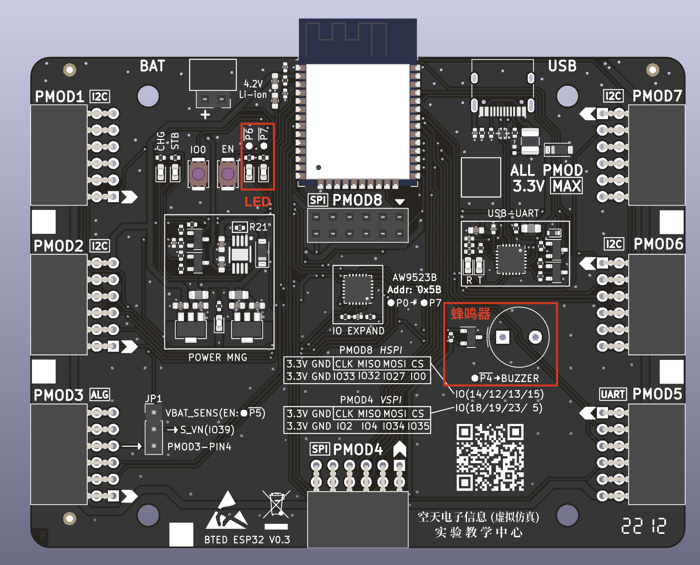
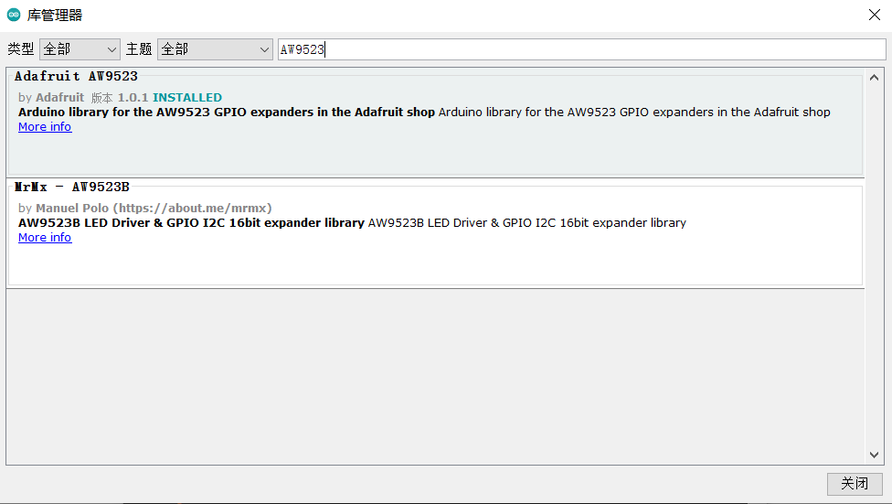
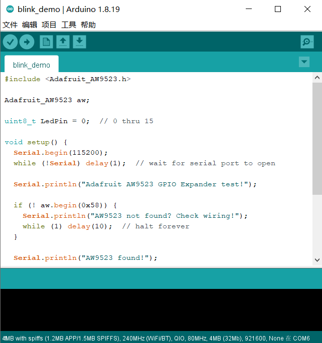

板载功能一览

点亮第一个 LED 灯

从框图可以得知，板载的人机交互设备包括两个 LED 灯和一个蜂鸣器。而这两个设备并没有直接连接到 ESP32 单片机上，而是连接到 AW9523 IO 拓展芯片上，这是因为 ESP32 的 IO 数有限，为了不影响核心板的可拓展性而设计的。
AW9523 芯片通过 I2C 总线和 ESP32 连接，共提供 8 个 IO 口，标记为 \(\bullet\text{P0}\sim\bullet\text{P7}\) 以示区分（ESP32 的 IO 口标记为 \(\text{IOx}\)）。在 LED 附近可以看到标注 \(\bullet\overline{\text{P6}}\) 和 \(\bullet\overline{\text{P7}}\)，这表示这两个 LED 连接到了拓展芯片的第 6、7 管脚（从 0 开始），上划线表示低电平点亮。同理，蜂鸣器 \(\bullet\overline{\text{P4}}\) 表示低 4 管脚低电平开启。
如果是直接连接到 Arduino 的管脚，我们能通过 pinMode 设置管脚为输出，再使用 digitalWrite 设置管脚为低电平。不过，这里连接到的是拓展芯片，那要怎么办呢？
与外围芯片打交道，需要“驱动”，Arduino 开源社区已经为我们准备好了 AW9523 芯片的驱动，并且提供了一套与 Arduino 完全相符的函数接口。
如果出错了？
如果出错，请翻看本页底部的”疑难解答“章节。
安装 Adafruit AW9523 库
我们可以借助 Arduino IDE 自带的库管理工具来安装。
-
依次点选
工具-管理库，并搜索AW9523:
点击安装，在弹出来的界面点击
Install All。 -
打开 AW9523 自带例程：依次点选
文件-示例-滚动到最下面-Adafruit AW9523-blink_demo
需要有两处修改！，首先把
LedPin的赋值修改为6或7，然后把aw.begin(0x58)修改为aw.begin(0x5B)，这是因为核心板上芯片地址为0x5B。 -
上传程序，并观察现象：
此时对应的 LED 应该会开始闪亮，如果没有开始闪烁，请打开串口监视器（波特率：115200)，按下复位键，观察输出是否正常 1。
不要忘记 aw.begin(addr)
aw.begin(addr) 为每个 AW9523 实例完成总线的初始化工作，如果不进行初始化，功能将完全无法使用！后续 aw 有关的代码也将无效。在复制到别的程序时，记得带上这句。
疑难解答
关于 BusIO 的编译错误
如果报错信息中包含 Adafruit BusIO 库相关内容未找到，请在库管理界面中搜索 BusIO 查看是否安装。如果没有安装，请选择 1.10.3 版本 （即比当前最新版本 1.11 老一个版本）点击安装；如果已经安装，也可按照上述方法降级，这个是一个库的版本依赖的 BUG。
库管理器打开时提示下载列表失败
检查电脑的系统时间（一般在屏幕右下角）是否正确，某些电脑因为电池老化无法保持时间，错误的系统时间会导致访问服务器失败。
-
你能用板载的蜂鸣器做一个 C4 炸弹报警器吗？ ↩